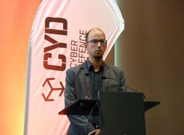

12th ACM Cyber-Physical System Security Workshop (CPSS 2026)
held in conjunction with
ACM AsiaCCS'26
June 2nd, 2026 - Bangalore, India
Important Dates
News
April 26, 2026: The agenda of the workshop is now available on the program section.
March 24, 2026: Aanjhan Ranganathan will be giving the keynote talk at CPSS 2026!
March 23, 2026: Registration information are available on the conference website. Early registrations goes until April 22, 2026.
March 16, 2026: Accepted papers have been announced. Congratulations to all the authors!
January 25, 2026: Submission deadline extended.
November 25, 2025: Submission deadline announced.
October 30, 2025: The workshop website is up.
Call for Papers
Cyber-Physical Systems (CPS) of interest to this workshop consist of large-scale interconnected systems of heterogeneous components interacting with their physical environments. There exist a multitude of CPS devices and applications deployed to serve critical functions in our lives thus making security an important non-functional attribute of such systems. This workshop will provide a platform for professionals from academia, government, and industry to discuss novel ways to address the ever-present security challenges facing CPS. We seek submissions describing theoretical and practical solutions to security challenges in CPS. Submissions pertinent to the security of embedded systems, IoT, SCADA, smart grid, and other critical infrastructure are welcome. Topics of interest include, but are not limited to:
- Attack detection for CPS
- Authentication and access control for CPS
- Autonomous vehicle security
- Availability and auditing for CPS
- Data security and privacy for CPS
- Deception Technologies for CPS
- Digital twins/Cyber range for CPS security
- Embedded systems security
- Formal methods in CPS
- Industrial control system security
- IoT security
- Legacy CPS system protection
- Lightweight crypto and security
- Maritime cyber security
- Recovery from cyber attacks
- Security and risk assessment for CPS
- Security architectures for CPS
- Security by design for CPS
- Smart grid security
- Threat modeling for CPS
- Transportation system security
- Vulnerability analysis for CPS
- Wireless sensor network security
Submission Instructions
Submission link: https://cpss2026.hotcrp.com/
Submitted papers must not substantially overlap papers that have been published or that are simultaneously submitted to a journal or a conference with proceedings. The review process is double-blinded. The submitted PDF version should be anonymized. Submissions must be in double-column ACM SIG Proceedings format (See here), and should not exceed 12 pages. Position papers describing the work in progress and papers describing novel testbeds are also welcome. Only pdf files will be accepted. Authors of accepted papers must guarantee that their papers will be presented at the workshop. At least one author of the paper must be registered at the appropriate conference rate. Accepted papers will be published in the ACM Digital Library. There will also be a best paper award.
Organizers
Dieter Gollmann (Hamburg University of Technology, Germany)
Ravishankar Iyer (UIUC, USA)
Douglas Jones (UIUC, USA)
Javier Lopez (University of Malaga, Spain)
Jianying Zhou (SUTD, Singapore) - Chair
Daniele Antonioli (EURECOM, France)

Martin Strohmeier (Armasuisse, Switzerland)
Eyasu Getahun Chekole (SUTD, Singapore)
Saman Zonouz (Georgia Tech, USA)
Daisuke Mashima (SUTD, Singapore)
Chuadhry Mujeeb Ahmed (Newcastle University, UK)
Alessandro Brighente (University of Padova, Italy)
Sebastian Kohler (University of Oxford, UK)
Massimo Merro (University of Verona, Italy)
Alessandro Erba (KIT, Germany)
Cristina Alcaraz (University of Malaga, Spain)
Nils Tippenhauer (CISPA, Germany)
Ali Abbasi (CISPA, Germany)
John H. Castellanos (NEC, Germany)
Clement Fung (CMU, USA)
Luis Burbano (UCSC, USA)
Aurélien Francillon (EURECOM, France)
Francesco Lupia (University of Calabria, Italy)
Ertem Esiner (UIUC, USA)
Eric Jedermann (RPTU Kaiserslautern, Germany)
Harshad Sathaye (ETH Zurich, Switzerland)
Keynote
Fragile Links, Resilient Systems: Toward Trusted Autonomy at Swarm-Scale
Aanjhan Ranganathan
Associate Professor, Khoury College of Computer Sciences, Northeastern University, Boston, USA
Autonomous systems, from drone swarms in the air to connected vehicles on the road, depend on fragile, invisible links: GPS for navigation and wireless networks such as 5G and sidelink for communication. When these links are spoofed, jammed, or degraded, the impact extends far beyond protocols and threatens the reliability of entire systems. In this talk, I will present our recent work on evaluating how adversarial conditions at the navigation and communication layers propagate into system-level failures. I will introduce PRISM, a swarm experimentation platform that integrates GPS, communications, and flight stacks to capture the cyber-physical consequences of attacks, and Dyna5G, a dynamic testbed for studying adversarial scenarios in next-generation cellular networks. Together, these platforms enable us to move from single-drone GPS spoofing demonstrations to swarm-scale analyses, to assess communication fragility in connected vehicles, and to study how protocols and algorithms behave under realistic wireless impairments. I will conclude with a forward-looking vision for trusted autonomy: developing resilient systems that can adapt and degrade gracefully, even when their foundational links are under attack.
Bio: Aanjhan Ranganathan is an Associate Professor in the Khoury College of Computer Sciences at Northeastern University in Boston, USA, where he leads the Signal Intelligence Lab. He is currently on sabbatical at ETH Zurich. His research focuses on wireless security, cyber-physical systems, and autonomous swarms, emphasizing both the analysis of adversarial conditions in navigation and communication infrastructures and the development of robust, secure systems to enhance real-world autonomy. He is a recipient of several awards, including the outstanding dissertation award from ETH Zurich, regional winner of the European Space Agency's Satellite Navigation competition, and NSF CAREER awards. His research has been generously funded by the NSF, Office of Naval Research, U.S. Army Combat Capabilities Development Command Army Research Laboratory, Armasuisse, Google, and Amazon.
Accepted Papers
QuietPrint: Protecting 3D Printers Against Acoustic Side-Channel Attacks
Seyed Ali Ghazi Asgar (Texas A&M University); Narasimha Reddy (Texas A&M University)
PyPLCPloit: A Vendor-agnostic Framework for PLC Exploitation and Vulnerability Discovery
Praneeta Maganti (BITS PILANI); Venkata Reddy Palleti (Indian Institute of Petroleum and Energy); Rajib Ranjan Maiti (BITS PILANI)
Why Low-Cost Consumer Routers Remain Insecure: A Cross-Layer Trust Analysis
Ashutosh Kumar, S. Venkatesan, Manish Kumar (IIIT Allahabad)
ICS-MMOC3: Exploring Operational Faults and Cyber Attacks with a Realistic Multi-Modal Power Generation ICS Dataset
Lior Shafir (Tel Aviv University); Aviad Elyashar (Ben Gurion University); Jonathan Cohen, Mickael Zeitoun (Ben Gurion University); Miroslav Holipsky, Barak Yaakov, Eli Aliev (ICNL); Rami Puzis (Ben Gurion University); Yaniv Harel, Avishai Wool (Tel Aviv University)
FEVA-ICS: Benchmarking Adversarial Robustness of Machine Learning-based Intrusion Detection Systems in Industrial Control Systems
Madhurima Ghosh (CISPA); Ankush Meshram (KASTEL); Markus Karch, Christian Haas (Fraunhofer IOSB); Xiao Zhang, Mridula Singh (CISPA)
Position Paper: On the Feasibility of Physical-to-cyber Attack against sEMG-based Body-machine Interface
Mausam Piyush Vora, Jason Soh, Daisuke Mashima (SUTD)
Classes of Cyber Physical System Observation Privacy Techniques
Chathuranga Sampath Kalutharage, Matthew Bradbury (Lancaster University)
Security Implications of 5G Communication in Industrial Systems
Stefan Lenz, Sotiris Michaelides, Moritz Rickert (RWTH Aachen University); Jonas Holtwick (RWTH Aachen); Martin Henze (RWTH Aachen University & Fraunhofer FKIE)
Program
09:00-09:30
Opening remark
09:30-10:30
Keynote: Fragile Links, Resilient Systems: Toward Trusted Autonomy at Swarm-Scale
10:30-11:00
Break
11:00-12:30
Morning session (3 papers)
- Classes of Cyber Physical System Observation Privacy Techniques
- Why Low-Cost Consumer Routers Remain Insecure: A Cross-Layer Trust Analysis
- QuietPrint: Protecting 3D Printers Against Acoustic Side-Channel Attacks
12:30-14:00
Lunch
14:00-15:30
Afternoon session (3 papers)
- PyPLCPloit: A Vendor-agnostic Framework for PLC Exploitation and Vulnerability Discovery
- FEVA-ICS: Benchmarking Adversarial Robustness of Machine Learning-based Intrusion Detection Systems in Industrial Control Systems
- ICS-MMOC3: Exploring Operational Faults and Cyber Attacks with a Realistic Multi-Modal Power Generation ICS Dataset
15:30-16:00
Break
16:00-17:00
Afternoon session (2 papers)
- Position Paper: On the Feasibility of Physical-to-cyber Attack against sEMG-based Body-machine Interface
- Security Implications of 5G Communication in Industrial Systems
17:00-17:10
Closing remarks and best paper awards
Contact
Email: antonioli.daniele@gmail.com and martin.strohmeier@armasuisse.ch
CPSS Home: http://jianying.space/cpss/
Updated: April 26, 2026.